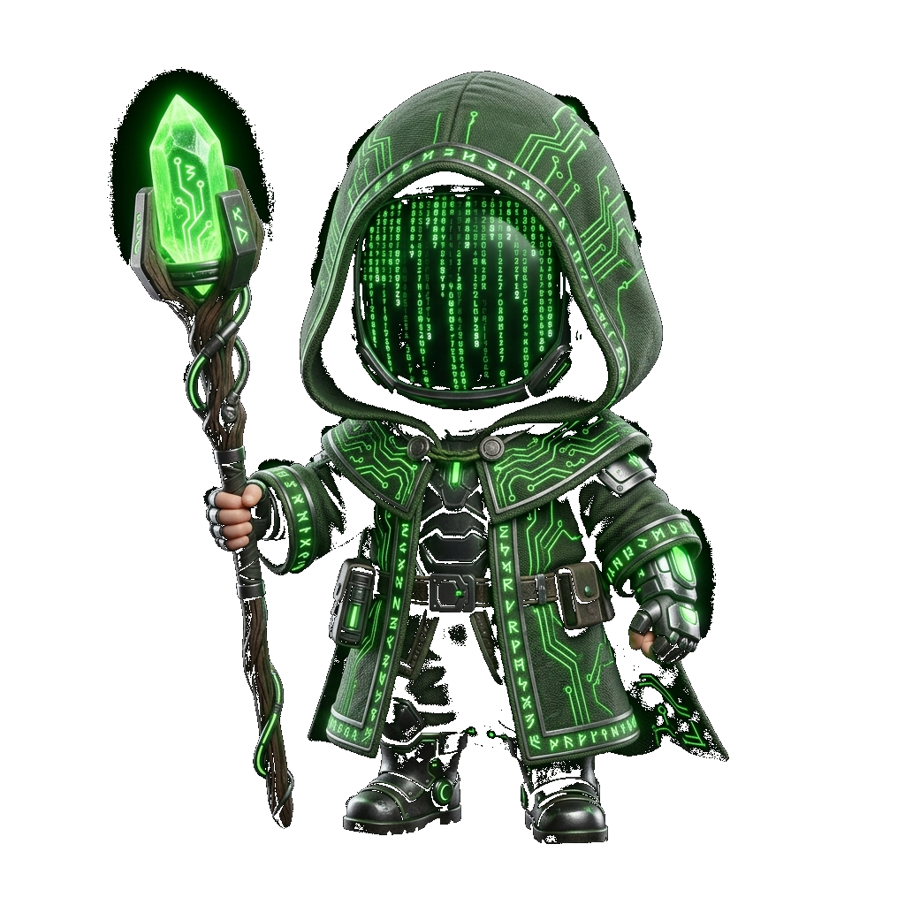

An AI-driven virtual mouse built with real-time kinematic smoothing and heuristic gesture recognition. Navigate your desktop exactly like you always do, just without touching anything.
Guide index finger to move cursor
Pinch Index + Thumb to click/drag
Make a gun shape for options
Three fingers up to toggle scroll
Peace Sign to open YouTube
Open palm for up, closed fist for down
Thumbs down minimizes all windows
Call me sign to capture screen
"The fundamental purpose of Nexus is to guarantee digital equity by ensuring that technology adapts to the human body, rather than forcing the human body to adapt to technology. We believe technology should fit the human body, not the other way around. Every human has a right to digital connection."
Nexus is driven by the conviction that digital connection is a universal human right, not a privilege dependent on physical ability. By replacing traditional input devices with intuitive, adaptive systems, Nexus serves three vital pillars of accessibility:
Ultimately, Nexus exists to empower every individual to claim their rightful place in the digital landscape, unhindered by physical constraints.
Enabling simultaneous dual-hand tracking. Pinch, rotate, and zoom into 3D models or navigate detailed maps using natural, two-handed expansion gestures.
Direct virtual joystick and steering wheel emulation. Play racing, simulation, and flight games by holding an invisible wheel in mid-air with real-time yaw/roll calculations.
Renders a transparent, holographic keyboard floating in front of your hands. Type text strings in mid-air by tracking finger coordinate intersections with virtual key bounds.
While engineered initially to restore digital autonomy, the core architecture of NEXUS possesses the capability to redefine human-computer interaction universally. By transforming the empty space in front of you into a highly responsive control matrix, we are pioneering a paradigm shift in how users engage with virtual environments.
This technology entirely circumvents the steep financial and hardware barriers of modern immersive gaming. Without requiring expensive headsets or specialized peripherals, any standard workstation becomes a gateway to fully interactive 3D worlds. Players can navigate complex simulations, cast spells in RPGs, or steer vehicles in real-time, relying exclusively on the native precision of their own kinematic movements.